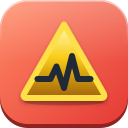
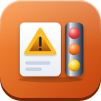
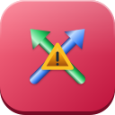
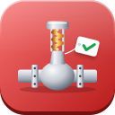

| A-扁平 | C-块面 | D-拟物 | |
| 设备异常初判与处置建议anomaly-triage-advisor | |  | |
| 巡检点检数据汇总inspection-data-digest | | ||
| 巡检点检任务清单生成inspection-task-dispatch | | | |
| 泄漏点登记与修复跟踪leak-point-tracker | |||
| 设备润滑五定管理lubrication-manager | | | |
| 参数越限与劣化趋势预警parameter-trend-alert | | | |
| 运行小时与启停次数统计runtime-hours-tracker | |||
| 备用设备切换与盘车提醒standby-rotation-reminder | |
| A-扁平 | C-块面 | D-拟物 | |
| 检修完工验收completion-acceptance |  | ||
| 设备缺陷登记与分级defect-intake-grading |  |  | |
| 检修前设备交出确认equipment-handover-check |  | ||
| 检修需求汇总上报maintenance-demand-rollup |  | ||
| 检修记录归档maintenance-record-archive |  | ||
| 车间检修方案安全措施核查入口overhaul-process-check-bridge |  | ||
| 车间作业票预检入口permit-precheck-bridge |  | ||
| 检修方案辅助编制repair-plan-assistant |  | ||
| 重复故障识别repeat-failure-detector |  | ||
| 大检修车间侧跟踪turnaround-workshop-tracker | |||
| 维修通知单草稿生成work-order-generator |  | ||
| 维修工单跟踪与催办work-order-tracker |
| A-扁平 | C-块面 | D-拟物 | |
| 承包商表现记录contractor-performance-log |  |  | |
| 承包商资质核验contractor-qualification-check |  |  | |
| 交叉作业冲突检测cross-operation-conflict |  |  |  |
| 现场作业监督要点site-supervision-points |  |  |
| A-扁平 | C-块面 | D-拟物 | |
| 设备台账查询equipment-ledger-query |  |  | |
| 设备变更管理辅助moc-change-assistant |  | ||
| 铭牌识别与台账录入nameplate-ocr-intake |  | ||
| 特种设备定检到期管理special-equipment-inspection-due |  |  | |
| 技术资料检索与原文引用technical-document-finder |  | ||
| 安全阀校验台账到期管理valve-instrument-calibration-ledger |  |  |  |
| A-扁平 | C-块面 | D-拟物 | |
| 备件消耗分析spare-parts-consumption-analysis |  | ||
| 备件需求提报spare-parts-demand |  | ||
| 备件库存查询spare-parts-inventory-query |  |
| A-扁平 | C-块面 | D-拟物 | |
| 车间设备日报equipment-daily-report |  |  | |
| 设备事件通报起草equipment-event-notice |  | ||
| 设备周报月报equipment-weekly-monthly-report |  | ||
| 迎检资料准备inspection-evidence-package |  |  | |
| 设备会议汇报稿meeting-material-builder |  |  | |
| 自查表预填self-audit-form-filler |  | ||
| 设备员工作交接记录shift-handover-record |  |
| A-扁平 | C-块面 | D-拟物 | |
| 故障案例检索failure-case-retrieval |  |  | |
| 故障调查辅助failure-investigation-assistant |  | ||
| 隐患整改闭环跟踪hazard-closure-tracker | |||
| 法规制度符合性自查regulation-compliance-check |  | ||
| 安全环保设施状态检查safety-environmental-device-check |  |
| A-扁平 | C-块面 | D-拟物 | |
| 设备能效分析equipment-energy-analysis |  |  | |
| 设备专业知识问答equipment-knowledge-qa |  |  | |
| 操作工异常识别指引卡operator-anomaly-guide |  |  | |
| 培训材料与考题生成training-material-generator |  |  | |
| 工作日志与待办管理worklog-todo-manager |  |  |